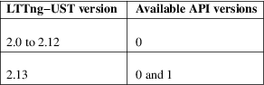
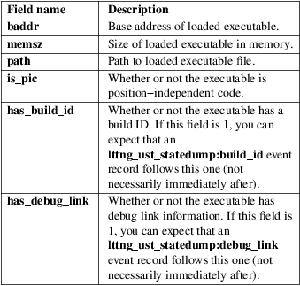
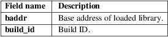
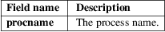
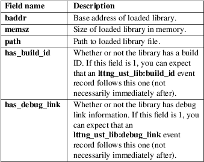
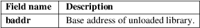
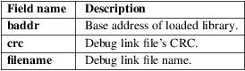

lttng-ust − LTTng user space tracing
#include <lttng/tracepoint.h>
#define
LTTNG_UST_TP_ARGS(args...)
#define LTTNG_UST_TP_ENUM_VALUES(values...)
#define LTTNG_UST_TP_FIELDS(fields...)
#define LTTNG_UST_TRACEPOINT_ENUM(prov_name,
enum_name, mappings)
#define LTTNG_UST_TRACEPOINT_EVENT(prov_name,
t_name, args, fields)
#define
LTTNG_UST_TRACEPOINT_EVENT_CLASS(cls_prov_name,
cls_name,
args, fields)
#define
LTTNG_UST_TRACEPOINT_EVENT_INSTANCE(cls_prov_name,
cls_name,
inst_prov_name, t_name, args)
#define
LTTNG_UST_TRACEPOINT_LOGLEVEL(prov_name,
t_name, level)
#define lttng_ust_do_tracepoint(prov_name,
t_name, ...)
#define lttng_ust_field_array(int_type,
field_name, expr, count)
#define
lttng_ust_field_array_nowrite(int_type,
field_name, expr, count)
#define lttng_ust_field_array_hex(int_type,
field_name, expr, count)
#define
lttng_ust_field_array_nowrite_hex(int_type,
field_name, expr,
count)
#define
lttng_ust_field_array_network(int_type,
field_name, expr, count)
#define
lttng_ust_field_array_network_nowrite(int_type,
field_name,
expr, count)
#define
lttng_ust_field_array_network_hex(int_type,
field_name, expr,
count)
#define
lttng_ust_field_array_network_nowrite_hex(int_type,
field_name,
expr, count)
#define lttng_ust_field_array_text(char,
field_name, expr, count)
#define lttng_ust_field_array_text_nowrite(char,
field_name, expr,
count)
#define lttng_ust_field_enum(prov_name,
enum_name, int_type, field_name,
expr)
#define
lttng_ust_field_enum_nowrite(prov_name,
enum_name, int_type,
field_name, expr)
#define lttng_ust_field_enum_value(label,
value)
#define lttng_ust_field_enum_range(label,
start, end)
#define lttng_ust_field_float(float_type,
field_name, expr)
#define
lttng_ust_field_float_nowrite(float_type,
field_name, expr)
#define lttng_ust_field_integer(int_type,
field_name, expr)
#define lttng_ust_field_integer_hex(int_type,
field_name, expr)
#define
lttng_ust_field_integer_network(int_type,
field_name, expr)
#define
lttng_ust_field_integer_network_hex(int_type,
field_name, expr)
#define
lttng_ust_field_integer_nowrite(int_type,
field_name, expr)
#define lttng_ust_field_sequence(int_type,
field_name, expr,
len_type, len_expr)
#define
lttng_ust_field_sequence_nowrite(int_type,
field_name, expr,
len_type, len_expr)
#define lttng_ust_field_sequence_hex(int_type,
field_name, expr,
len_type, len_expr)
#define
lttng_ust_field_sequence_nowrite_hex(int_type,
field_name, expr,
len_type, len_expr)
#define
lttng_ust_field_sequence_network(int_type,
field_name, expr,
len_type, len_expr)
#define
lttng_ust_field_sequence_network_nowrite(int_type,
field_name,
expr, len_type,
len_expr)
#define
lttng_ust_field_sequence_network_hex(int_type,
field_name, expr,
len_type, len_expr)
#define
lttng_ust_field_sequence_network_nowrite_hex(int_type,
field_name,
expr, len_type,
len_expr)
#define lttng_ust_field_sequence_text(char,
field_name, expr, len_type,
len_expr)
#define lttng_ust_field_sequence_text_nowrite(char,
field_name, expr,
len_type, len_expr)
#define lttng_ust_field_string(field_name,
expr)
#define
lttng_ust_field_string_nowrite(field_name,
expr)
#define lttng_ust_tracepoint(prov_name,
t_name, ...)
#define
lttng_ust_tracepoint_enabled(prov_name,
t_name)
Link with, following this manual page:
• -llttng-ust -ldl
• If you define _LGPL_SOURCE before including <lttng/tracepoint.h> (directly or indirectly): -llttng-ust-common
The Linux Trace Toolkit: next generation <http://lttng.org/> is an open source software package used for correlated tracing of the Linux kernel, user applications, and user libraries.
LTTng−UST is the user space tracing component of the LTTng project. It is a port to user space of the low−overhead tracing capabilities of the LTTng Linux kernel tracer. The liblttng-ust library is used to trace user applications and libraries.
Note
This man page is about the liblttng-ust library. The
LTTng−UST project also provides Java and Python
packages to trace applications written in those languages.
How to instrument and trace Java and Python applications is
documented in the online LTTng documentation
<http://lttng.org/docs/>.
There are three ways to use liblttng-ust:
• Using the lttng_ust_tracef(3) API, which is similar to printf(3).
• Using the lttng_ust_tracelog(3) API, which is lttng_ust_tracef(3) with a log level parameter.
• Defining your own tracepoints. See the Creating a tracepoint provider section below.
Compatibility
with previous APIs
Since LTTng−UST 2.13, the
LTTNG_UST_COMPAT_API_VERSION definition controls
which LTTng−UST APIs are available
(compiled):
Undefined
All APIs are available.
N (0 or positive integer)
API version N, and all the following existing APIs, are available. Previous APIs are not available (not compiled).
The following table shows the mapping from LTTng−UST versions (up to LTTng−UST 2.13.5) to available API versions:

This manual page only documents version 1 of the API.
If you wish to have access to version 0 of the API (for example, the tracepoint(), ctf_integer(), and TRACEPOINT_EVENT() macros), then either don’t define LTTNG_UST_COMPAT_API_VERSION, or define it to 0 before including any LTTng−UST header.
Creating
a tracepoint provider
Creating a tracepoint provider is the first step of using
liblttng-ust. The next steps are:
• Instrumenting your application with lttng_ust_tracepoint() calls
• Building your application with LTTng−UST support, either statically or dynamically.
A tracepoint provider is a compiled object containing the event probes corresponding to your custom tracepoint definitions. A tracepoint provider contains the code to get the size of an event and to serialize it, amongst other things.
To create a tracepoint provider, start with the following tracepoint provider header template:
#undef
LTTNG_UST_TRACEPOINT_PROVIDER
#define LTTNG_UST_TRACEPOINT_PROVIDER my_provider
#undef
LTTNG_UST_TRACEPOINT_INCLUDE
#define LTTNG_UST_TRACEPOINT_INCLUDE
"./tp.h"
#if
!defined(_TP_H) || \
defined(LTTNG_UST_TRACEPOINT_HEADER_MULTI_READ)
#define _TP_H
#include <lttng/tracepoint.h>
/*
* LTTNG_UST_TRACEPOINT_EVENT(),
LTTNG_UST_TRACEPOINT_EVENT_CLASS(),
* LTTNG_UST_TRACEPOINT_EVENT_INSTANCE(),
* LTTNG_UST_TRACEPOINT_LOGLEVEL(), and
‘LTTNG_UST_TRACEPOINT_ENUM()‘
* are used here.
*/
#endif /* _TP_H */
#include <lttng/tracepoint−event.h>
In this template, the tracepoint provider is named my_provider (LTTNG_UST_TRACEPOINT_PROVIDER definition). The file needs to bear the name of the LTTNG_UST_TRACEPOINT_INCLUDE definition (tp.h in this case). Between #include <lttng/tracepoint.h> and #endif go the invocations of the LTTNG_UST_TRACEPOINT_EVENT(), LTTNG_UST_TRACEPOINT_EVENT_CLASS(), LTTNG_UST_TRACEPOINT_EVENT_INSTANCE(), LTTNG_UST_TRACEPOINT_LOGLEVEL(), and LTTNG_UST_TRACEPOINT_ENUM() macros.
Note
You can avoid writing the prologue and epilogue boilerplate
in the template file above by using the
lttng-gen-tp(1) tool shipped with
LTTng−UST.
The tracepoint provider header file needs to be included in a source file which looks like this:
#define LTTNG_UST_TRACEPOINT_CREATE_PROBES
#include "tp.h"
Together, those two files (let’s call them tp.h and tp.c) form the tracepoint provider sources, ready to be compiled.
You can create multiple tracepoint providers to be used in a single application, but each one must have its own header file.
The LTTNG_UST_TRACEPOINT_EVENT() usage section below shows how to use the LTTNG_UST_TRACEPOINT_EVENT() macro to define the actual tracepoints in the tracepoint provider header file.
See the EXAMPLE section below for a complete example.
LTTNG_UST_TRACEPOINT_EVENT()
usage
The LTTNG_UST_TRACEPOINT_EVENT() macro is used in a
template provider header file (see the Creating a
tracepoint provider section above) to define
LTTng−UST tracepoints.
The LTTNG_UST_TRACEPOINT_EVENT() usage template is as follows:
LTTNG_UST_TRACEPOINT_EVENT(
/* Tracepoint provider name */
my_provider,
/*
Tracepoint/event name */
my_tracepoint,
/*
List of tracepoint arguments (input) */
LTTNG_UST_TP_ARGS(
...
),
/*
List of fields of eventual event (output) */
LTTNG_UST_TP_FIELDS(
...
)
)
The LTTNG_UST_TP_ARGS() macro contains the input arguments of the tracepoint. Those arguments can be used in the argument expressions of the output fields defined in LTTNG_UST_TP_FIELDS().
The format of the LTTNG_UST_TP_ARGS() parameters is: C type, then argument name; repeat as needed, up to ten times. For example:
LTTNG_UST_TP_ARGS(
int, my_int,
const char *, my_string,
FILE *, my_file,
double, my_float,
struct my_data *, my_data
)
The LTTNG_UST_TP_FIELDS() macro contains the output fields of the tracepoint, that is, the actual data that can be recorded in the payload of an event emitted by this tracepoint.
The LTTNG_UST_TP_FIELDS() macro contains a list of lttng_ust_field_*() macros NOT separated by commas. The available macros are documented in the Available lttng_ust_field_*() field type macros section below.
Available
field macros
This section documents the available
lttng_ust_field_*() macros that can be inserted in
the LTTNG_UST_TP_FIELDS() macro of the
LTTNG_UST_TRACEPOINT_EVENT() macro.
Standard integer, displayed in base 10:
lttng_ust_field_integer(int_type,
field_name, expr)
lttng_ust_field_integer_nowrite(int_type,
field_name, expr)
Standard integer, displayed in base 16:
lttng_ust_field_integer_hex(int_type, field_name, expr)
Integer in network byte order (big endian), displayed in base 10:
lttng_ust_field_integer_network(int_type, field_name, expr)
Integer in network byte order, displayed in base 16:
lttng_ust_field_integer_network_hex(int_type, field_name, expr)
Floating point number:
lttng_ust_field_float(float_type,
field_name, expr)
lttng_ust_field_float_nowrite(float_type,
field_name, expr)
Null−terminated string:
lttng_ust_field_string(field_name,
expr)
lttng_ust_field_string_nowrite(field_name,
expr)
Statically−sized array of integers (_hex versions displayed in hexadecimal, _network versions in network byte order):
lttng_ust_field_array(int_type,
field_name, expr, count)
lttng_ust_field_array_nowrite(int_type,
field_name, expr, count)
lttng_ust_field_array_hex(int_type,
field_name, expr, count)
lttng_ust_field_array_nowrite_hex(int_type,
field_name, expr, count)
lttng_ust_field_array_network(int_type,
field_name, expr, count)
lttng_ust_field_array_network_nowrite(int_type,
field_name, expr,
count)
lttng_ust_field_array_network_hex(int_type,
field_name, expr, count)
lttng_ust_field_array_network_nowrite_hex(int_type,
field_name,
expr, count)
Statically−sized array, printed as text; no need to be null−terminated:
lttng_ust_field_array_text(char,
field_name, expr, count)
lttng_ust_field_array_text_nowrite(char,
field_name, expr,
count)
Dynamically−sized array of integers (_hex versions displayed in hexadecimal, _network versions in network byte order):
lttng_ust_field_sequence(int_type,
field_name, expr, len_type,
len_expr)
lttng_ust_field_sequence_nowrite(int_type,
field_name, expr,
len_type, len_expr)
lttng_ust_field_sequence_hex(int_type,
field_name, expr, len_type,
len_expr)
lttng_ust_field_sequence_nowrite_hex(int_type,
field_name, expr,
len_type, len_expr)
lttng_ust_field_sequence_network(int_type,
field_name, expr,
len_type, len_expr)
lttng_ust_field_sequence_network_nowrite(int_type,
field_name, expr,
len_type, len_expr)
lttng_ust_field_sequence_network_hex(int_type,
field_name, expr,
len_type, len_expr)
lttng_ust_field_sequence_network_nowrite_hex(int_type,
field_name,
expr, len_type,
len_expr)
Dynamically−sized array, displayed as text; no need to be null−terminated:
lttng_ust_field_sequence_text(char,
field_name, expr, len_type,
len_expr)
lttng_ust_field_sequence_text_nowrite(char,
field_name, expr,
len_type, len_expr)
Enumeration. The enumeration field must be defined before using this macro with the LTTNG_UST_TRACEPOINT_ENUM() macro. See the LTTNG_UST_TRACEPOINT_ENUM() usage section for more information.
lttng_ust_field_enum(prov_name,
enum_name, int_type, field_name,
expr)
lttng_ust_field_enum_nowrite(prov_name,
enum_name, int_type,
field_name, expr)
The parameters are:
count
Number of elements in array/sequence. This must be known at compile time.
enum_name
Name of an enumeration field previously defined with the LTTNG_UST_TRACEPOINT_ENUM() macro. See the LTTNG_UST_TRACEPOINT_ENUM() usage section for more information.
expr
C expression resulting in the field’s value. This expression can use one or more arguments passed to the tracepoint. The arguments of a given tracepoint are defined in the LTTNG_UST_TP_ARGS() macro (see the Creating a tracepoint provider section above).
field_name
Event field name (C identifier syntax, NOT a literal string).
float_type
Float C type (float or double). The size of this type determines the size of the floating point number field.
int_type
Integer C type. The size of this type determines the size of the integer/enumeration field.
len_expr
C expression resulting in the sequence’s length. This expression can use one or more arguments passed to the tracepoint.
len_type
Unsigned integer C type of sequence’s length.
prov_name
Tracepoint provider name. This must be the same as the tracepoint provider name used in a previous field definition.
The _nowrite versions omit themselves from the recorded trace, but are otherwise identical. Their primary purpose is to make some of the event context available to the event filters without having to commit the data to sub−buffers. See lttng-enable-event(1) to learn more about dynamic event filtering.
See the EXAMPLE section below for a complete example.
LTTNG_UST_TRACEPOINT_ENUM()
usage
An enumeration field is a list of mappings between an
integers, or a range of integers, and strings (sometimes
called labels or enumerators). Enumeration
fields can be used to have a more compact trace when the
possible values for a field are limited.
An enumeration field is defined with the LTTNG_UST_TRACEPOINT_ENUM() macro:
LTTNG_UST_TRACEPOINT_ENUM(
/* Tracepoint provider name */
my_provider,
/*
Enumeration name (unique in the whole tracepoint provider)
*/
my_enum,
/*
Enumeration mappings */
LTTNG_UST_TP_ENUM_VALUES(
...
)
)
LTTNG_UST_TP_ENUM_VALUES() contains a list of enumeration mappings, NOT separated by commas. Two macros can be used in the LTTNG_UST_TP_ENUM_VALUES(): lttng_ust_field_enum_value() and lttng_ust_field_enum_range().
lttng_ust_field_enum_value() is a single value mapping:
lttng_ust_field_enum_value(label, value)
This macro maps the given label string to the value value.
lttng_ust_field_enum_range() is a range mapping:
lttng_ust_field_enum_range(label, start, end)
This macro maps the given label string to the range of integers from start to end, inclusively. Range mappings may overlap, but the behaviour is implementation−defined: each trace reader handles overlapping ranges as it wishes.
See the EXAMPLE section below for a complete example.
LTTNG_UST_TRACEPOINT_EVENT_CLASS()
usage
A tracepoint class is a class of tracepoints sharing
the same field types and names. A tracepoint instance is one
instance of such a declared tracepoint class, with its own
event name.
LTTng−UST creates one event serialization function per tracepoint class. Using LTTNG_UST_TRACEPOINT_EVENT() creates one tracepoint class per tracepoint definition, whereas using LTTNG_UST_TRACEPOINT_EVENT_CLASS() and LTTNG_UST_TRACEPOINT_EVENT_INSTANCE() creates one tracepoint class, and one or more tracepoint instances of this class. In other words, many tracepoints can reuse the same serialization code. Reusing the same code, when possible, can reduce cache pollution, thus improve performance.
The LTTNG_UST_TRACEPOINT_EVENT_CLASS() macro accepts the same parameters as the LTTNG_UST_TRACEPOINT_EVENT() macro, except that instead of an event name, its second parameter is the tracepoint class name:
#define LTTNG_UST_TRACEPOINT_PROVIDER my_provider
/* ... */
LTTNG_UST_TRACEPOINT_EVENT_CLASS(
/* Tracepoint class provider name */
my_provider,
/*
Tracepoint class name */
my_tracepoint_class,
/*
List of tracepoint arguments (input) */
LTTNG_UST_TP_ARGS(
...
),
/*
List of fields of eventual event (output) */
LTTNG_UST_TP_FIELDS(
...
)
)
Once the tracepoint class is defined, you can create as many tracepoint instances as needed:
#define LTTNG_UST_TRACEPOINT_PROVIDER natality
/* ... */
LTTNG_UST_TRACEPOINT_EVENT_INSTANCE(
/* Name of the tracepoint class provider */
my_provider,
/*
Tracepoint class name */
my_tracepoint_class,
/*
Name of the local (instance) tracepoint provider */
natality,
/*
Tracepoint/event name */
my_tracepoint,
/*
List of tracepoint arguments (input) */
LTTNG_UST_TP_ARGS(
...
)
)
As you can see, the LTTNG_UST_TRACEPOINT_EVENT_INSTANCE() does not contain the LTTNG_UST_TP_FIELDS() macro, because they are defined at the LTTNG_UST_TRACEPOINT_EVENT_CLASS() level.
Note that the LTTNG_UST_TRACEPOINT_EVENT_INSTANCE() macro requires two provider names:
• The name of the tracepoint class provider (my_provider in the example above).
This is the same as the first argument of the LTTNG_UST_TRACEPOINT_EVENT_CLASS() expansion to refer to.
• The name of the local, or instance, provider (natality in the example above).
This is the provider name which becomes the prefix part of the name of the events which such a tracepoint creates.
The two provider names may be different if the tracepoint class and the tracepoint instance macros are in two different translation units.
See the EXAMPLE section below for a complete example.
LTTNG_UST_TRACEPOINT_LOGLEVEL()
usage
Optionally, a log level can be assigned to a defined
tracepoint. Assigning different levels of severity to
tracepoints can be useful: when controlling tracing
sessions, you can choose to only enable events falling into
a specific log level range using the --loglevel and
--loglevel-only options of the
lttng-enable-event(1) command.
Log levels are assigned to tracepoints that are already defined using the LTTNG_UST_TRACEPOINT_LOGLEVEL() macro. The latter must be used after having used LTTNG_UST_TRACEPOINT_EVENT() or LTTNG_UST_TRACEPOINT_EVENT_INSTANCE() for a given tracepoint. The LTTNG_UST_TRACEPOINT_LOGLEVEL() macro is used as follows:
LTTNG_UST_TRACEPOINT_LOGLEVEL(
/* Tracepoint provider name */
my_provider,
/*
Tracepoint/event name */
my_tracepoint,
/*
Log level */
LTTNG_UST_TRACEPOINT_LOGLEVEL_INFO
)
The available log level definitions are:
LTTNG_UST_TRACEPOINT_LOGLEVEL_EMERG
System is unusable.
LTTNG_UST_TRACEPOINT_LOGLEVEL_ALERT
Action must be taken immediately.
LTTNG_UST_TRACEPOINT_LOGLEVEL_CRIT
Critical conditions.
LTTNG_UST_TRACEPOINT_LOGLEVEL_ERR
Error conditions.
LTTNG_UST_TRACEPOINT_LOGLEVEL_WARNING
Warning conditions.
LTTNG_UST_TRACEPOINT_LOGLEVEL_NOTICE
Normal, but significant, condition.
LTTNG_UST_TRACEPOINT_LOGLEVEL_INFO
Informational message.
LTTNG_UST_TRACEPOINT_LOGLEVEL_DEBUG_SYSTEM
Debug information with system−level scope (set of programs).
LTTNG_UST_TRACEPOINT_LOGLEVEL_DEBUG_PROGRAM
Debug information with program−level scope (set of processes).
LTTNG_UST_TRACEPOINT_LOGLEVEL_DEBUG_PROCESS
Debug information with process−level scope (set of modules).
LTTNG_UST_TRACEPOINT_LOGLEVEL_DEBUG_MODULE
Debug information with module (executable/library) scope (set of units).
LTTNG_UST_TRACEPOINT_LOGLEVEL_DEBUG_UNIT
Debug information with compilation unit scope (set of functions).
LTTNG_UST_TRACEPOINT_LOGLEVEL_DEBUG_FUNCTION
Debug information with function−level scope.
LTTNG_UST_TRACEPOINT_LOGLEVEL_DEBUG_LINE
Debug information with line−level scope (default log level).
LTTNG_UST_TRACEPOINT_LOGLEVEL_DEBUG
Debug−level message.
See the EXAMPLE section below for a complete example.
Instrumenting
your application
Once the tracepoint provider is created (see the Creating
a tracepoint provider section above), you can instrument
your application with the defined tracepoints thanks to the
lttng_ust_tracepoint() macro:
#define lttng_ust_tracepoint(prov_name, t_name, ...)
With:
prov_name
Tracepoint provider name.
t_name
Tracepoint/event name.
...
Tracepoint arguments, if any.
Make sure to include the tracepoint provider header file anywhere you use lttng_ust_tracepoint() for this provider.
Note
Even though LTTng−UST supports
lttng_ust_tracepoint() call site duplicates having
the same provider and tracepoint names, it is recommended to
use a provider/tracepoint name pair only once within the
application source code to help map events back to their
call sites when analyzing the trace.
Sometimes, arguments to the tracepoint are expensive to compute (take call stack, for example). To avoid the computation when the tracepoint is disabled, you can use the lttng_ust_tracepoint_enabled() and lttng_ust_do_tracepoint() macros:
#define
lttng_ust_tracepoint_enabled(prov_name,
t_name)
#define lttng_ust_do_tracepoint(prov_name,
t_name, ...)
lttng_ust_tracepoint_enabled() returns a non−zero value if the tracepoint named t_name from the provider named prov_name is enabled at run time.
lttng_ust_do_tracepoint() is like lttng_ust_tracepoint(), except that it doesn’t check if the tracepoint is enabled. Using lttng_ust_tracepoint() with lttng_ust_tracepoint_enabled() is dangerous since lttng_ust_tracepoint() also contains the lttng_ust_tracepoint_enabled() check, thus a race condition is possible in this situation:
if
(lttng_ust_tracepoint_enabled(my_provider, my_tracepoint)) {
stuff = prepare_stuff();
}
lttng_ust_tracepoint(my_provider, my_tracepoint, stuff);
If the tracepoint is enabled after the condition, then stuff is not prepared: the emitted event will either contain wrong data, or the whole application could crash (segmentation fault, for example).
Note
Neither lttng_ust_tracepoint_enabled() nor
lttng_ust_do_tracepoint() have a STAP_PROBEV()
call, so if you need it, you should emit this call
yourself.
Statically
linking the tracepoint provider
With the static linking method, compiled tracepoint
providers are copied into the target
application.
Define LTTNG_UST_TRACEPOINT_DEFINE definition below the LTTNG_UST_TRACEPOINT_CREATE_PROBES definition in the tracepoint provider source:
#define
LTTNG_UST_TRACEPOINT_CREATE_PROBES
#define LTTNG_UST_TRACEPOINT_DEFINE
#include "tp.h"
Create the tracepoint provider object file:
$ cc −c −I. tp.c
Note
Although an application instrumented with LTTng−UST
tracepoints can be compiled with a C++ compiler, tracepoint
probes should be compiled with a C
compiler.
At this point, you can archive this tracepoint provider object file, possibly with other object files of your application or with other tracepoint provider object files, as a static library:
$ ar rc tp.a tp.o
Using a static library does have the advantage of centralising the tracepoint providers objects so they can be shared between multiple applications. This way, when the tracepoint provider is modified, the source code changes don’t have to be patched into each application’s source code tree. The applications need to be relinked after each change, but need not to be otherwise recompiled (unless the tracepoint provider’s API changes).
Then, link your application with this object file (or with the static library containing it) and with liblttng-ust and libdl (libc on a BSD system):
$ cc −o app tp.o app.o −llttng−ust −ldl
Dynamically
loading the tracepoint provider
The second approach to package the tracepoint provider is to
use the dynamic loader: the library and its member functions
are explicitly sought, loaded at run
time.
In this scenario, the tracepoint provider is compiled as a shared object.
The process to create the tracepoint provider shared object is pretty much the same as the static linking method, except that:
• Since the tracepoint provider is not part of the application, LTTNG_UST_TRACEPOINT_DEFINE must be defined, for each tracepoint provider, in exactly one source file of the application
• LTTNG_UST_TRACEPOINT_PROBE_DYNAMIC_LINKAGE must be defined next to LTTNG_UST_TRACEPOINT_DEFINE
Regarding LTTNG_UST_TRACEPOINT_DEFINE and LTTNG_UST_TRACEPOINT_PROBE_DYNAMIC_LINKAGE, the recommended practice is to use a separate C source file in your application to define them, then include the tracepoint provider header files afterwards. For example, as tp-define.c:
#define
LTTNG_UST_TRACEPOINT_DEFINE
#define
LTTNG_UST_TRACEPOINT_PROBE_DYNAMIC_LINKAGE
#include "tp.h"
The tracepoint provider object file used to create the shared library is built like it is using the static linking method, but with the -fpic option:
$ cc −c −fpic −I. tp.c
It is then linked as a shared library like this:
$ cc −shared −Wl,−−no−as−needed −o tp.so tp.o −llttng−ust
This tracepoint provider shared object isn’t linked with the user application: it must be loaded manually. This is why the application is built with no mention of this tracepoint provider, but still needs libdl:
$ cc −o app app.o tp−define.o −ldl
There are two ways to dynamically load the tracepoint provider shared object:
• Load it manually from the application using dlopen(3)
• Make the dynamic loader load it with the LD_PRELOAD environment variable (see ld.so(8))
If the application does not dynamically load the tracepoint provider shared object using one of the methods above, tracing is disabled for this application, and the events are not listed in the output of lttng-list(1).
Note that it is not safe to use dlclose(3) on a tracepoint provider shared object that is being actively used for tracing, due to a lack of reference counting from LTTng−UST to the shared object.
For example, statically linking a tracepoint provider to a shared object which is to be dynamically loaded by an application (a plugin, for example) is not safe: the shared object, which contains the tracepoint provider, could be dynamically closed (dlclose(3)) at any time by the application.
To instrument a shared object, either:
• Statically link the tracepoint provider to the application, or
• Build the tracepoint provider as a shared object (following the procedure shown in this section), and preload it when tracing is needed using the LD_PRELOAD environment variable.
Using
LTTng−UST with daemons
Some extra care is needed when using liblttng-ust
with daemon applications that call fork(2),
clone(2), or BSD’s rfork(2) without a
following exec(3) family system call. The library
liblttng-ust-fork.so needs to be preloaded before
starting the application with the LD_PRELOAD
environment variable (see
ld.so(8)).
To use liblttng-ust with a daemon application which closes file descriptors that were not opened by it, preload the liblttng-ust-fd.so library before you start the application. Typical use cases include daemons closing all file descriptors after fork(2), and buggy applications doing “double−closes”.
Context
information
Context information can be prepended by the LTTng−UST
tracer before each event, or before specific
events.
Context fields can be added to specific channels using lttng-add-context(1).
The following context fields are supported by LTTng−UST:
General context fields
cpu_id
CPU ID.
Note
This context field is always enabled, and it cannot be added
with lttng-add-context(1). Its main purpose is to be
used for dynamic event filtering. See
lttng-enable-event(1) for more information about
event filtering.
ip
Instruction pointer: enables recording the exact address from which an event was emitted. This context field can be used to reverse−lookup the source location that caused the event to be emitted.
pthread_id
POSIX thread identifier.
Can be used on architectures where pthread_t maps nicely to an unsigned long type.
Process context fields
procname
Thread name, as set by exec(3) or prctl(2). It is recommended that programs set their thread name with prctl(2) before hitting the first tracepoint for that thread.
vpid
Virtual process ID: process ID as seen from the point of view of the current process ID namespace (see pid_namespaces(7)).
vtid
Virtual thread ID: thread ID as seen from the point of view of the current process ID namespace (see pid_namespaces(7)).
perf context fields
perf:thread:COUNTER
perf counter named COUNTER. Use lttng add-context --list to list the available perf counters.
Only available on IA−32 and x86−64 architectures.
perf:thread:raw:rN:NAME
perf counter with raw ID N and custom name NAME. See lttng-add-context(1) for more details.
Namespace context fields (see namespaces(7))
cgroup_ns
Inode number of the current control group namespace (see cgroup_namespaces(7)) in the proc file system.
ipc_ns
Inode number of the current IPC namespace (see ipc_namespaces(7)) in the proc file system.
mnt_ns
Inode number of the current mount point namespace (see mount_namespaces(7)) in the proc file system.
net_ns
Inode number of the current network namespace (see network_namespaces(7)) in the proc file system.
pid_ns
Inode number of the current process ID namespace (see pid_namespaces(7)) in the proc file system.
time_ns
Inode number of the current clock namespace (see time_namespaces(7)) in the proc file system.
user_ns
Inode number of the current user namespace (see user_namespaces(7)) in the proc file system.
uts_ns
Inode number of the current UTS namespace (see uts_namespaces(7)) in the proc file system.
Credential context fields (see credentials(7))
vuid
Virtual real user ID: real user ID as seen from the point of view of the current user namespace (see user_namespaces(7)).
vgid
Virtual real group ID: real group ID as seen from the point of view of the current user namespace (see user_namespaces(7)).
veuid
Virtual effective user ID: effective user ID as seen from the point of view of the current user namespace (see user_namespaces(7)).
vegid
Virtual effective group ID: effective group ID as seen from the point of view of the current user namespace (see user_namespaces(7)).
vsuid
Virtual saved set−user ID: saved set−user ID as seen from the point of view of the current user namespace (see user_namespaces(7)).
vsgid
Virtual saved set−group ID: saved set−group ID as seen from the point of view of the current user namespace (see user_namespaces(7)).
LTTng−UST
state dump
If an application that uses liblttng-ust becomes part
of a tracing session, information about its currently loaded
shared objects, their build IDs, and their debug link
information are emitted as events by the
tracer.
The following LTTng−UST state dump events exist and must be enabled to record application state dumps. Note that, during the state dump phase, LTTng−UST can also emit shared library load/unload events (see Shared library load/unload tracking below).
lttng_ust_statedump:start
Emitted when the state dump begins.
This event has no fields.
lttng_ust_statedump:end
Emitted when the state dump ends. Once this event is emitted, it is guaranteed that, for a given process, the state dump is complete.
This event has no fields.
lttng_ust_statedump:bin_info
Emitted when information about a currently loaded executable or shared object is found.
Fields:

lttng_ust_statedump:build_id
Emitted when a build ID is found in a currently loaded shared library. See Debugging Information in Separate Files <https://sourceware.org/gdb/onlinedocs/gdb/Separate-Debug-Files.html> for more information about build IDs.
Fields:

lttng_ust_statedump:debug_link
Emitted when debug link information is found in a currently loaded shared library. See Debugging Information in Separate Files <https://sourceware.org/gdb/onlinedocs/gdb/Separate-Debug-Files.html> for more information about debug links.
Fields:
lttng_ust_statedump:procname
The process procname at process start.
Fields:

Shared
library load/unload tracking
The LTTng−UST state dump and the
LTTng−UST helper library to instrument the dynamic
linker (see liblttng-ust-dl(3)) can emit shared
library load/unload tracking
events.
The following shared library load/unload tracking events exist and must be enabled to track the loading and unloading of shared libraries:
lttng_ust_lib:load
Emitted when a shared library (shared object) is loaded.
Fields:

lttng_ust_lib:unload
Emitted when a shared library (shared object) is unloaded.
Fields:

lttng_ust_lib:build_id
Emitted when a build ID is found in a loaded shared library (shared object). See Debugging Information in Separate Files <https://sourceware.org/gdb/onlinedocs/gdb/Separate-Debug-Files.html> for more information about build IDs.
Fields:
lttng_ust_lib:debug_link
Emitted when debug link information is found in a loaded shared library (shared object). See Debugging Information in Separate Files <https://sourceware.org/gdb/onlinedocs/gdb/Separate-Debug-Files.html> for more information about debug links.
Fields:

Detect
if LTTng−UST is loaded
To detect if liblttng-ust is loaded from an
application:
1. Define the lttng_ust_loaded weak symbol globally:
int lttng_ust_loaded __attribute__((weak));
This weak symbol is set by the constructor of liblttng-ust.
2. Test lttng_ust_loaded where needed:
/* ... */
if
(lttng_ust_loaded) {
/* LTTng−UST is loaded */
} else {
/* LTTng−UST is NOT loaded */
}
/* ... */
Note
A few examples are available in the directory of
LTTng−UST’s source
tree.
This example shows all the features documented in the previous sections. The static linking method is chosen here to link the application with the tracepoint provider.
You can compile the source files and link them together statically like this:
$
cc −c −I. tp.c
$ cc −c app.c
$ cc −o app tp.o app.o −llttng−ust
−ldl
Using the lttng(1) tool, create an LTTng tracing session, enable all the events of this tracepoint provider, and start tracing:
$
lttng create my−session
$ lttng enable−event −−userspace
'my_provider:*'
$ lttng start
You may also enable specific events:
$
lttng enable−event −−userspace
my_provider:big_event
$ lttng enable−event −−userspace
my_provider:event_instance2
Run the application:
$ ./app some arguments
Stop the current tracing session and inspect the recorded events:
$
lttng stop
$ lttng view
Tracepoint
provider header file
tp.h:
#undef
LTTNG_UST_TRACEPOINT_PROVIDER
#define LTTNG_UST_TRACEPOINT_PROVIDER
my_provider
#undef
LTTNG_USTTRACEPOINT_INCLUDE
#define LTTNG_USTTRACEPOINT_INCLUDE
"./tp.h"
#if
!defined(_TP_H) || \
defined(LTTNG_UST_TRACEPOINT_HEADER_MULTI_READ)
#define _TP_H
#include
<lttng/tracepoint.h>
#include
<stdio.h>
#include "app.h"
LTTNG_UST_TRACEPOINT_EVENT(
my_provider,
simple_event,
LTTNG_UST_TP_ARGS(
int, my_integer_arg,
const char *, my_string_arg
),
LTTNG_UST_TP_FIELDS(
lttng_ust_field_string(argc, my_string_arg)
lttng_ust_field_integer(int, argv, my_integer_arg)
)
)
LTTNG_UST_TRACEPOINT_ENUM(
my_provider,
my_enum,
LTTNG_UST_TP_ENUM_VALUES(
lttng_ust_field_enum_value("ZERO", 0)
lttng_ust_field_enum_value("ONE", 1)
lttng_ust_field_enum_value("TWO", 2)
lttng_ust_field_enum_range("A RANGE", 52, 125)
lttng_ust_field_enum_value("ONE THOUSAND", 1000)
)
)
LTTNG_UST_TRACEPOINT_EVENT(
my_provider,
big_event,
LTTNG_UST_TP_ARGS(
int, my_integer_arg,
const char *, my_string_arg,
FILE *, stream,
double, flt_arg,
int *, array_arg
),
LTTNG_UST_TP_FIELDS(
lttng_ust_field_integer(int, int_field1, my_integer_arg * 2)
lttng_ust_field_integer_hex(long int, stream_pos,
ftell(stream))
lttng_ust_field_float(double, float_field, flt_arg)
lttng_ust_field_string(string_field, my_string_arg)
lttng_ust_field_array(int, array_field, array_arg, 7)
lttng_ust_field_array_text(char, array_text_field,
array_arg, 5)
lttng_ust_field_sequence(int, seq_field, array_arg, int,
my_integer_arg / 10)
lttng_ust_field_sequence_text(char, seq_text_field,
array_arg, int,
my_integer_arg / 5)
lttng_ust_field_enum(my_provider, my_enum, int,
enum_field, array_arg[1])
)
)
LTTNG_UST_TRACEPOINT_LOGLEVEL(my_provider,
big_event,
LTTNG_UST_TRACEPOINT_LOGLEVEL_WARNING)
LTTNG_UST_TRACEPOINT_EVENT_CLASS(
my_provider,
my_tracepoint_class,
LTTNG_UST_TP_ARGS(
int, my_integer_arg,
struct app_struct *, app_struct_arg
),
LTTNG_UST_TP_FIELDS(
lttng_ust_field_integer(int, a, my_integer_arg)
lttng_ust_field_integer(unsigned long, b,
app_struct_arg−>b)
lttng_ust_field_string(c, app_struct_arg−>c)
)
)
LTTNG_UST_TRACEPOINT_EVENT_INSTANCE(
my_provider,
my_tracepoint_class,
my_provider,
event_instance1,
LTTNG_UST_TP_ARGS(
int, my_integer_arg,
struct app_struct *, app_struct_arg
)
)
LTTNG_UST_TRACEPOINT_EVENT_INSTANCE(
my_provider,
my_tracepoint_class,
my_provider,
event_instance2,
LTTNG_UST_TP_ARGS(
int, my_integer_arg,
struct app_struct *, app_struct_arg
)
)
LTTNG_UST_TRACEPOINT_LOGLEVEL(my_provider,
event_instance2,
LTTNG_UST_TRACEPOINT_LOGLEVEL_INFO)
LTTNG_UST_TRACEPOINT_EVENT_INSTANCE(
my_provider,
my_tracepoint_class,
my_provider,
event_instance3,
LTTNG_UST_TP_ARGS(
int, my_integer_arg,
struct app_struct *, app_struct_arg
)
)
#endif /* _TP_H */
#include <lttng/tracepoint−event.h>
Tracepoint
provider source file
tp.c:
#define
LTTNG_UST_TRACEPOINT_CREATE_PROBES
#define
LTTNG_UST_TRACEPOINT_DEFINE
#include "tp.h"
Application
header file
app.h:
#ifndef
_APP_H
#define _APP_H
struct
app_struct {
unsigned long b;
const char *c;
double d;
};
#endif /* _APP_H */
Application
source file
app.c:
#include
<stdlib.h>
#include
<stdio.h>
#include
"tp.h"
#include
"app.h"
static
int array_of_ints[] = {
100, −35, 1, 23, 14, −6, 28, 1001, −3000,
};
int
main(int argc, char* argv[])
{
FILE *stream;
struct app_struct
app_struct;
lttng_ust_tracepoint(my_provider,
simple_event, argc, argv[0]);
stream = fopen("/tmp/app.txt",
"w");
if
(!stream) {
fprintf(stderr,
"Error: Cannot open /tmp/app.txt for writing\n");
return EXIT_FAILURE;
}
if
(fprintf(stream, "0123456789") != 10) {
fclose(stream);
fprintf(stderr, "Error: Cannot write to
/tmp/app.txt\n");
return EXIT_FAILURE;
}
lttng_ust_tracepoint(my_provider,
big_event, 35,
"hello tracepoint", stream, −3.14,
array_of_ints);
fclose(stream);
app_struct.b = argc;
app_struct.c = "[the string]";
lttng_ust_tracepoint(my_provider, event_instance1, 23,
&app_struct);
app_struct.b = argc * 5;
app_struct.c = "[other string]";
lttng_ust_tracepoint(my_provider, event_instance2, 17,
&app_struct);
app_struct.b = 23;
app_struct.c = "nothing";
lttng_ust_tracepoint(my_provider, event_instance3,
−52,
&app_struct);
return EXIT_SUCCESS;
}
LTTNG_HOME
Alternative user’s home directory. This variable is useful when the user running the instrumented application has a non−writable home directory.
Unix sockets used for the communication between liblttng-ust and the LTTng session and consumer daemons (part of the LTTng−tools project) are located in a specific directory under $LTTNG_HOME (or $HOME if $LTTNG_HOME is not set).
LTTNG_UST_ALLOW_BLOCKING
If set, allow the application to retry event tracing when there’s no space left for the event record in the sub−buffer, therefore effectively blocking the application until space is made available or the configured timeout is reached.
To allow an application to block during tracing, you also need to specify a blocking timeout when you create a channel with the --blocking-timeout option of the lttng-enable-channel(1) command.
This option can be useful in workloads generating very large trace data throughput, where blocking the application is an acceptable trade−off to prevent discarding event records.
Warning
Setting this environment variable may significantly affect
application timings.
LTTNG_UST_ABORT_ON_CRITICAL
If set, abort the instrumented application on a critical error message.
LTTNG_UST_CLOCK_PLUGIN
Path to the shared object which acts as the clock override plugin. An example of such a plugin can be found in the LTTng−UST documentation under
LTTNG_UST_DEBUG
If set, enable liblttng-ust's debug and error output.
LTTNG_UST_GETCPU_PLUGIN
Path to the shared object which acts as the getcpu() override plugin. An example of such a plugin can be found in the LTTng−UST documentation under
LTTNG_UST_REGISTER_TIMEOUT
Waiting time for the registration done session daemon command before proceeding to execute the main program (milliseconds).
The value 0 means do not wait. The value -1 means wait forever. Setting this environment variable to 0 is recommended for applications with time constraints on the process startup time.
Default: 3000.
LTTNG_UST_WITHOUT_BADDR_STATEDUMP
If set, prevents liblttng-ust from performing a base address state dump (see the LTTng−UST state dump section above).
LTTNG_UST_WITHOUT_PROCNAME_STATEDUMP
If set, prevents liblttng-ust from performing a procname state dump (see the LTTng−UST state dump section above).
If you encounter any issue or usability problem, please report it on the LTTng bug tracker <https://bugs.lttng.org/projects/lttng-ust>.
• LTTng project website <http://lttng.org>
• LTTng documentation <http://lttng.org/docs>
• Git repositories <http://git.lttng.org>
• GitHub organization <http://github.com/lttng>
• Continuous integration <http://ci.lttng.org/>
• Mailing list <http://lists.lttng.org> for support and development: lttng-dev@lists.lttng.org
• IRC channel <irc://irc.oftc.net/lttng>: #lttng on irc.oftc.net
This library is part of the LTTng−UST project.
This library is distributed under the GNU Lesser General Public License, version 2.1 <http://www.gnu.org/licenses/old-licenses/lgpl-2.1.en.html>. See the for more details.
Thanks to Ericsson for funding this work, providing real−life use cases, and testing.
Special thanks to Michel Dagenais and the DORSAL laboratory <http://www.dorsal.polymtl.ca/> at École Polytechnique de Montréal for the LTTng journey.
LTTng−UST was originally written by Mathieu Desnoyers, with additional contributions from various other people. It is currently maintained by Mathieu Desnoyers <mailto:mathieu.desnoyers@efficios.com>.
lttng_ust_tracef(3), lttng_ust_tracelog(3), lttng-gen-tp(1), lttng-ust-dl(3), lttng-ust-cyg-profile(3), lttng(1), lttng-enable-event(1), lttng-list(1), lttng-add-context(1), babeltrace(1), dlopen(3), ld.so(8)